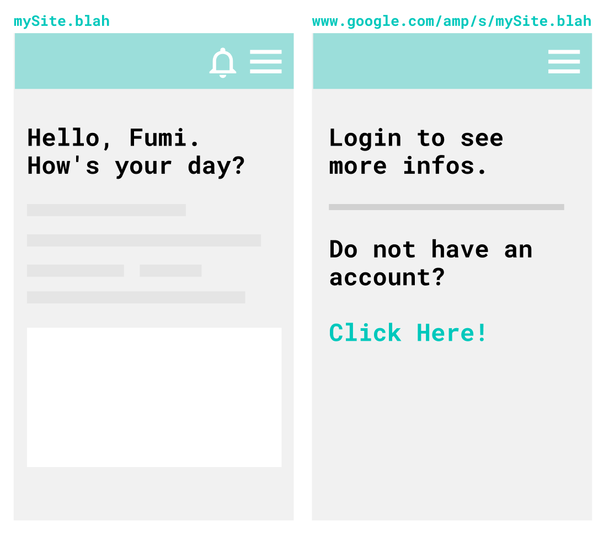
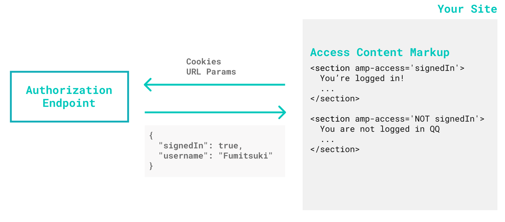
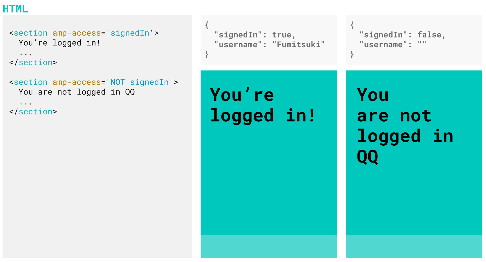
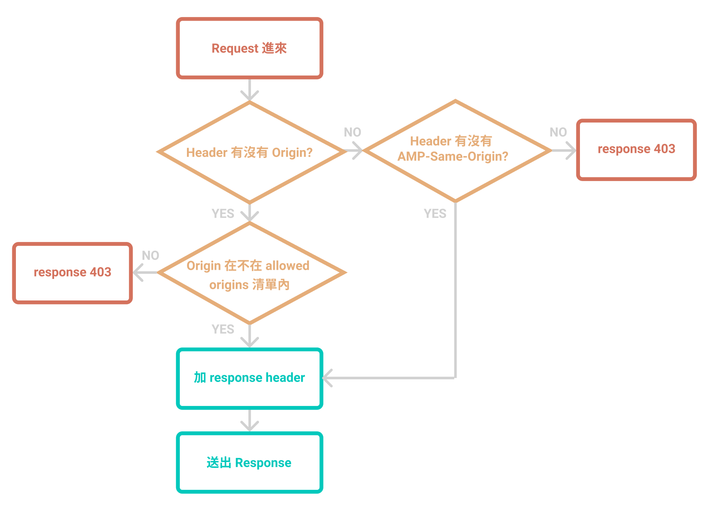

透過 amp-access 讓你在 Cache 頁面也能順利保持登入！
（範例會以 Rails 來實作，登入的部分使用 devise 套件為例）
前言
不知不覺來到了 2019 年末。從 2016 年到現在，AMP 也越發成熟完整（但我怎麼還是覺得 bug 還是有點多w），有很多實用的 components 也有豐富的範例可以參考。如果想要大大地提升網站在手機上的搜尋排序，實作 AMP 網頁會帶來相當不錯的效益呢。
由於 AMP 的種種限制，除了拿來實作 content 為主、功能不多的網站，大家很可能仍然對 AMP 望之卻步。今天就要來跟大家介紹透過實作 amp-access 顯示登入狀態的部分。
為什麼 Cache 頁面會是未登入呢？
當你開開心心地做了一個 AMP 網站，也丟上 Google Cache（或其他家的 AMP Cache，這裡以 Google 的為例），愉快地在搜尋頁面點下自家網站的連結，讀取速度飛快又美好 ♪
檢查了一下你突然發現：「欸？我不是一直保持登入狀態嗎？為什麼在 Cache 頁面上是沒有登入的呢？」

對於在本站已經登入的使用者來說，明明已經登入你的網站了，但是從搜尋結果進去的頁面卻是未登入狀態，也會感到相當疑惑，體驗上也不甚很好。
我們先來探討，究竟這個狀況到底是怎麼發生的呢？
舉例來說，原本頁面的 view 可能是像這樣：
<% if user_signed_in? %>
親愛的 <%= current_user.name %> 你好！
<% else %>
你還沒登入哦！快點擊
<%= link_to('這裡', new_user_session_path) %>
登入吧～
<% end %>
當 Google AMP Cache 要來爬你的網站的時候，他當然是沒有登入的狀態，所以就會爬到寫著「你還沒登入哦！快點擊這裡登入吧～」的版本，於是你的 cache 頁面永遠都是沒登入的狀況。
如果希望 cache 到的頁面上可以正常地顯示「親愛的 XXX 你好！」，可以借助 amp-access 這個元件來實現。
Components
AMP-access 主要分成這些部分：
AMP Reader ID
匿名、唯一、不跨裝置的 ID，如果使用者沒有清理 cookie，有效期會是一年。
根據官方文件：
Publishers can use their own authentication cookies, or they may rely on the Reader ID, or a combination of both.
如果是透過 cookie 來獲取登入資訊的話其實可以不用到 Reader ID。
Access Content Markup
用來定義網頁上的哪些部分要在什麼情況底下顯示或不顯示的 markup。
比方說你希望 signedIn 為 true 時顯示底下的元素，就會在元素上加上 amp-access 這個 attribute。
<section amp-access='signedIn'>
登入的使用者會看到這行字哦！
</section>
如果希望是 signedIn 為 false 才顯示：
<section amp-access='NOT signedIn'>
沒有登入的人會看到這行字哦！
</section>
按照上面的寫法，你可能預期一開始元件都不會出現，一直到 Authorization response 回來才會出現元件，但事實上這些元件一開始都會在畫面上，當 Authorization response 回來時才會「跳閃」一下，不該出現的元件才會隱藏起來。
如果希望一開始畫面剛 render 時不要顯示這個元件，可以加上 amp-access-hide 這個 attribute：
<section amp-access='signedIn' amp-access-hide>
一開始不會顯示，確定 response 中 signedIn 為 true 的話會看到這行字哦！
</section>
更多 access content markup 的語法請參考官方說明。
Authorization Endpoint
在 AMP runtime 的時候會打這個 endpoint，根據 response 的 JSON 內容來 render 畫面。
Pingback Endpoint
當使用者開始瀏覽畫面或是完成 login 的時候，AMP 會去打 Pingback Endpoint。Pingback Endpoint 不需要 response，有 response 也會被忽略。比方官方提供的 Paywall 範例，Pingback 就被用在計算使用者已瀏覽幾篇 article 等。
Login Link and Login Page
如果會用到 Reader ID 來實作登入的話，就會需要在 AMP-Access configuration 的時候加上 login 相關的 link：
{
"login": "https://mySite.blah/login?rid={READER_ID}"
}
接著在畫面上加上連結讓使用者登入：
<a on="tap:amp-access.login">登入</a>
但因為等等的範例會是用自己的 cookie，就不會在 configuration 加上 login link。
簡易圖解
到這裡還看得很糊沒有關係，我們來大致了解一下 AMP-Access 大概是怎麼運作的。
1.一開始 AMP runtime 夾帶著 cookies 會去打你（或你們家的後端工程師）寫好的 authorization endpoint。

AMP 提供一些 Access URL Variables。比方說如果你的 authorization endpoint url 是像這樣：
https://yourSite.blah/api/amp-access/authorization?ref=DOCUMENT_REFERRER&rid=READER_ID&url=CANONICAL_URL"
實際上 AMP runtime 打 endpoint 的時候，rid 會變成 rid=amp-OFsqR4pPKynymPyMmplPNMvxSTsNQob3TnK-oE3nwVT0clORaZ1rkeEz8xej-vV6，url 變成 https://yourSite.blah。
2.這個時候你寫的 authorization endpoint 可能會根據 cookie 辨識使用者，回傳一個 json。

3.於是在 cache 頁面上，登入狀態也能正常顯示了，開開心心 ♫
CORS in AMP
然而 AMP 有一些關於 CORS (Cross-Origin Resource Sharing) 的規範。
如果沒有把網頁送上 cache，使用者是直接向你家的 server 送 request。但是如果使用者從 AMP Cache 那邊請求你的網頁， Cache 頁面在 AMP runtime 的時候會向你的 server 打 authorization endpoint，這個時候就會變成跨網域的連線了。
因此 AMP 也有針對這個情境，要求實作簡單的 request verification 並且根據他的要求設定 access control 相關的 header。
基本流程大致如下： 
1.如果 Header 有帶 Origin，就檢查是否是 allowed origins：
- 你自己的網站 eg.
mySite.blah - AMP cache eg.
mySite-blah.cdn.ampproject.org
origin 不在 allowed origins 的 request 就讓你的 server 回傳 HTTP status 403 的回應，慢走不送。
2.如果沒有 Origin header 的，就檢查是否有 AMP-Same-Origin: true，有才放行，沒有一樣回 403。
當 AMP Runtime 在送 XHR request 的時候，如果是在 same origin 時，會自動幫你加 AMP-Same-Origin: true 這個 header。
3.在 response header 加上 Access-Control-Allow-Credentials: true 和 Access-Control-Allow-Origin: <origin>
這裡的 <origin> 指的是 response 的 origin。
聽到這裡，是不是覺得其實沒有很複雜呢（是嗎
那就來動手試試看吧！
三分鐘動手實做！
如果沒有碰壁卡關，view 沒有要大改的話，應該是可以在三分鐘內完成吧（欸
開始之前，請先準備一個有實作 AMP 的 Rails Application。
CORS Authentication
我們先來打造一個 base controller，讓之後實作的 API 都繼承這個 controller。（其實要改成 concern 也是可以）
除了 amp-access ，如果實作 AMP 中的 XHR request 等等也會有 CORS 的情境，這個時候就可以直接繼承這個 controller。
module Api
class BaseController < ActionController::Base
end
end
如果Origin 屬於 allowed origins（你的網站、AMP Cache），或者有 AMP-same-origin: true 的 header 才放行。且加上規定的 response header：
module Api
class BaseController < ActionController::Base
before_action :cors_verification
ALLOWED_ORIGINS = [
'https://mySite.blah',
'https://mySite-blah.cdn.ampproject.org',
'https://mySite.blah.amp.cloudflare.com'
]
def cors_verification
if request.headers['origin'].in?(ALLOWED_ORIGINS)
origin = request.headers['origin']
elsif request.headers['origin'].nil? && request.headers['AMP-same-origin']&.casecmp?('true')
origin = request.base_url
else
render(json: { message: 'Unauthorized Request' }, status: :forbidden) && return
end
response.set_header('Access-Control-Allow-Credentials', 'true')
response.set_header('Access-Control-Allow-Origin', origin)
end
end
end
Authorization Endpoint
接著我們做 authorization endpoint 的部分！這裡直接使用了 devise 的 #{mapping}_signed_in?、current_#{mapping} 等方法
module Api
class AmpAccessController < Api::BaseController
def authorization
render json: { signedIn: user_signed_in?, username: current_user&.name }, status: :ok
end
end
end
設定 routes
當然不能忘了加 routes。
namespace :api, defaults: { format: 'json' } do
get :authorization, to: 'amp_access#authorization'
end
AMP Access configuration
記得要在你的頁面上加上 amp-access 的 required script：
<script async custom-element="amp-access" src="https://cdn.ampproject.org/v0/amp-access-0.1.js"></script>
接著我們來加上 amp-access 的 configuration 吧。文件上要求 authorization endpoint 和 pingback endpoint 要帶 READER_ID。而 RANDOM 會回傳隨機亂碼，可以避免被瀏覽器 cache。
<script id='amp-access' type='application/json'>
{
"authorization": "<%= api_authorization_url(rid: 'READER_ID', '_=': 'RANDOM') %>",
"pingback": "",
"noPingback": true,
"authorizationFallbackResponse": {
"signedIn": false
}
}
</script>
Access Content Markup
相信剛剛看了 Access Content Markup 的介紹，現在應該已經很了解他的基本語法了。
如果原本你的 view 裡面有長得像這樣的東西：
<% if user_signed_in? %>
<section> ... </section>
<% else %>
<section> ... </section>
<%end%>
把它改成用 amp-access 和 amp-access-hide，管理它要不要在畫面上顯示：
<section amp-access="signedIn" amp-access-hide>
...
<section>
<section amp-access="NOT signedIn">
...
<section>
那如果是要在畫面上顯示 username 呢？這個時候就會需要用到 amp-mushtache。
使用之前要記得加上 required script：
<script async custom-template="amp-mustache" src="https://cdn.ampproject.org/v0/amp-mustache-0.2.js"></script>
使用 template 來顯示名稱：
<section amp-access="signedIn">
<template amp-access-template type="amp-mustache">
親愛的 {{username}} 您好
</template>
</section>
基本上到這裡就大功告成了！是不是能夠正常顯示登入了呢？
別忘了去試試看你的網站的 cache 版本是不是也運作正常哦 ( ～’ω’)～
備註
本文最初放在五倍紅寶石的專欄文章中，然而隨著公司分家改組，文章跟著被移除了QQ
因此將文章移至部落格中。